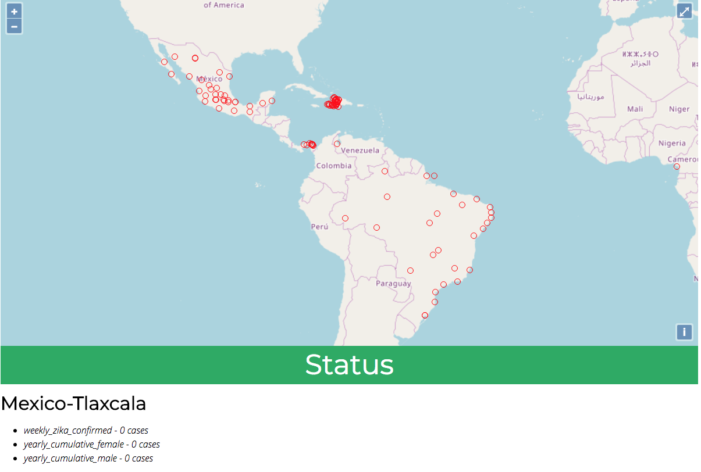

Week 5 - Project Week: Zika Mission Control
Zika Mission Control
Throughout this class we will build on the Zika Mission Control project every single project week.
This project will be our chance to practice the concepts we learned in the previous instruction week.
Each week we will have a list of requirements that we will need to build into our project.
Project Overview
The Zika Mission Control dashboard will be a Spring web application. It will display an interactive map from Open Street Maps (OSM). The map will present a layer of features that represent an outbreak of Zika. Each representation of a Zika report will be clickable, and upon a click event the user will see more information about that specific report.
Each week we will build on our currently existing project, so it is crucial to finish the primary objectives for each project week!
Here is a mockup of the application you will be building.

Project Requirements
Following are the requirements from our stakeholders, and our tech team.
Stakeholder Requirements
- Zika Reports, that are currently stored in CSV files, need to be stored in a relational database.
- Zika Reports need to be geographically displayed on an interactive map.
- Zika Reports are clickable: upon clicking a report more information about that report is displayed.
Technical Requirements
- Version Control: Code base is managed with Git, and a remote repository is hosted on GitLab.
- TDD: Tests are to be written before features are implemented.
- Unit Testing: All Java models need to be tested.
- Integration Testing: All Spring controllers, and
JpaRepositories need to be tested.
- Datastore: PSQL/PostGIS need to be used as the primary data store for the Zika reports.
- Backend: Java and Spring will be used to handle the HTTP Requests, serve the HTTP Responses.
- Backend: Java, Spring Data, JPA, and Hibernate will be used to interact with the database.
- Frontend: HTML, CSS, Javascript, AJAX, and jQuery should be used to work with the Zika report data.
- Frontend: OpenLayers should be used to load an interactive map from OSM.
- Frontend: Zika reports should be loaded onto the OpenLayers map as a new feature layer.
There are many ways we could go about building this project, but we must follow the provided requirements.
Primary Objectives
You should complete all primary objectives before working on any secondary objectives.
For your primary objectives, articles have been provided to help you think about what needs to be completed to complete the objective.
- Create a Spring application, setup Git, and GitLab, configure the database, and prepare IntelliJ.
- Display an interactive map from OSM in the browser.
- Display Zika reports on the map as red circles.
- Clicked Zika reports display more information about the report.
Secondary Objectives
For your secondary objectives no guidance will be given to you. You will have to think about what needs to be completed to pass the objective.
- Zika reports change color based on the severity of the outbreak.
- Zika reports change size based on the severity of the outbreak.
- Duplicate city/state/country names are not displayed if more than one report is selected.
- Sensitive Database information has not been committed to our version control software.
- Database is secure from SQL injection.
- Add coordinate information to CSV files that are missing latitude and longitude.
Bonus Missions
If you finish all objectives above, here are some additional features to consider. These are roughly listed in order from easiest to hardest. Feel free to pick what seems interesting to you, rather than starting from the top of the list. These are all independent of one another.
- Remove dependence on jQuery
- Display report info in a popup (with OpenLayers) instead of a pane or sidebar
- Exclude features with 0 cases reported
- In a new container (e.g. a sidebar) display a summary of report data by country, sorted from most cases to least
- “Animate” reports displayed by adding them to the map one-by-one on page load
- Add a select box to filter down to a specific country or region
- Add the ability to display reported cases within a given numerical range
Turning in Your Work
Code Review
Let your instructor know When you complete the primary objectives. The instructor will need a link to your GitLab repo, and they will perform a code review, and leave you feedback.
Objective Checklist
As you work through the objectives for this week, keep track of them on your Checklist, your instructor will also confirm which objectives you completed in their code review. If you don’t pass an objective the instructor will give you feedback on what you need to do to complete that objective.
Presentation
Friday afternoon everyone will present their project to the class. This presentation is meant to be a celebration of your hard work throughout the week, and as a chance for you to share, and learn from the other students in the class.
At the end of this course, during your graduation ceremony you will be expected to present your final project to the attendees. Every project week we will have a presentation as a way for you to practice for this final presentation.
Check Your Knowledge
We covered a lot of ground this week.
To reinforce your understanding of the concepts answer these questions to yourself:
- When did we have to make changes to a controller file?
- When did we have to make changes to a repository file?
- When did we have to make changes to the
index.html file?
- When did we have to make changes to the script.js file?
- When did we have to make changes to our test files?
- How does our application communicate with the database?
- Our data starts as various CSV files. How is that data transformed throughout our project?
- How does our application convert a Java Object to GeoJSON?
- How do we create a new layer in OpenLayers?
- How do we add that layer to our map from OSM?
Bonus Resources
Note
Remember that both jQuery and OpenLayers will silently fail if they are not given valid JSON and valid GeoJSON (respectively).